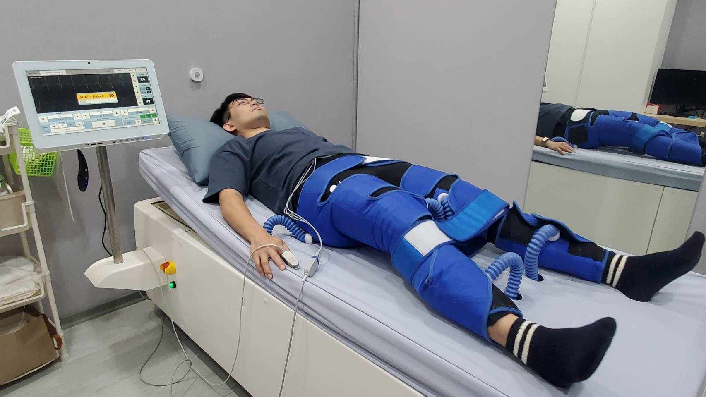
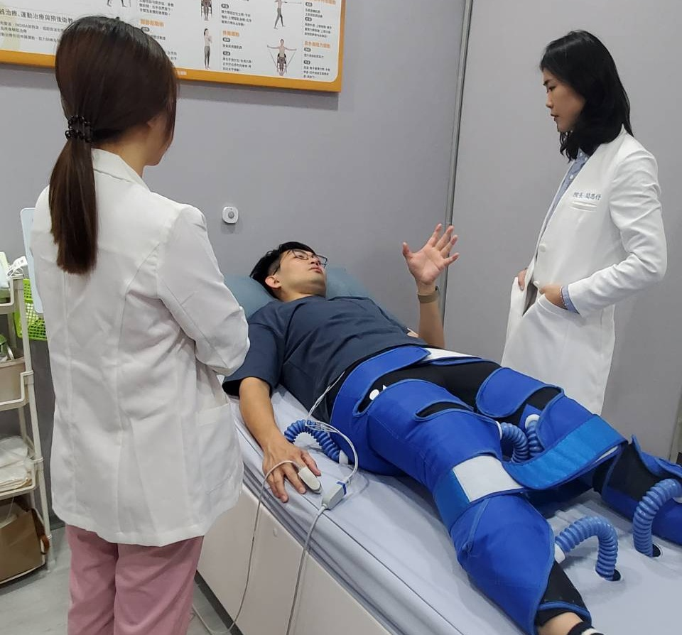

EECP體外反搏助攻運動表現，讓李先生恢復最佳狀態！

運動愛好者李先生的困擾：家族痛風病史與加速身體恢復
39歲的李先生，從小就熱愛運動，最喜歡打羽球與籃球，平時也保持良好的運動習慣。然而，身體卻有個讓他頭疼的問題——痛風病史。雖然他已經控制飲食與生活習慣，但每當發作時，那種劇烈的疼痛仍然讓他寸步難行，運動計畫也不得不中斷。
近期，他聽說 EECP體外反搏能夠幫助血液循環、增加身體代謝，對於運動表現也有一定的幫助，便決定來診所嘗試看看，希望能讓身體維持在最佳狀態。
EECP體外反搏：強化循環，提升運動恢復力

EECP體外反搏是一種非侵入性的療程，透過氣囊同步擠壓下肢血管，幫助血液回流至心臟，進而增強心血管功能與全身血液循環。對於運動愛好者來說，這不僅有助於提升耐力，也可能幫助肌肉恢復與減少運動後的疲勞感。
目前，李先生已完成多次療程，最明顯的變化就是睡眠品質提升，不再像以前那樣淺眠。此外，他發現運動後的舒緩效果更好，身體的適應力與恢復速度都比以前更快。
期待更好的運動表現，讓體能再升級！
李先生表示，自己一開始只是想嘗試看看，但沒想到EECP體外反博療程對體能與運動恢復真的有幫助。雖然無法直接改善痛風問題，但促進循環與提升代謝，讓他在日常訓練中感受到身體的正向變化。
李先生開心地說： 「療程剛結束就覺得身體很輕鬆、雙腳非常輕盈，以前運動完總是特別累，現在身體恢復速度變快，體能穩定度也慢慢提升，這讓我對接下來的療程非常期待。」